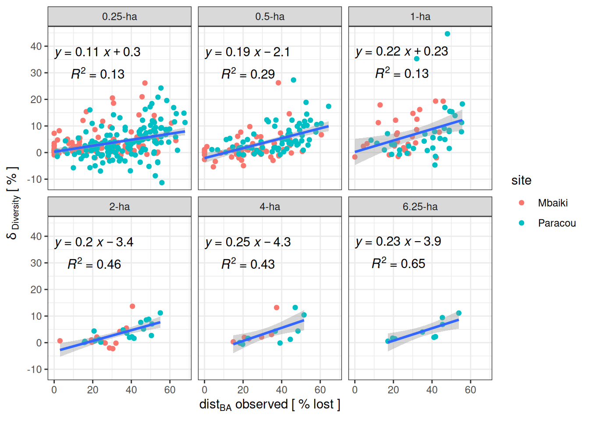

Code
library(tidyverse)
library(entropart)
library(cmdstanr)library(tidyverse)
library(entropart)
library(cmdstanr)We explored the role of plot area in model sensitivity, particularly with regard to the site parameters representing the linear effect of forest structure disturbance on intermediate diversity extremes. For this, we focused on the Paracou and Mbaiki sites, whose original plots are 6.25 and 4 ha respectively, and virtually subdivided them into adjacent plots of 4, 2, 1, 0.5 and 0.25 ha (for reference, the main analyses were conducted using 1-ha virtual plots). To update: We then ran the joint model with basal area and genus diversity using Hill’s number of order 1 for each size, and assessed the sign, significance, strength, and uncertainty of the site parameters.
Paracou plots are 6.25-ha 250x250m plots, we subdivided them into 4-ha, 2-ha, 1-ha, 0.5-ha and 0.25-ha.
paracou <- "data/raw_data/data_cleaned_paracou.csv" |>
read_csv() |>
rename_all(tolower) |>
rename(x = xtreeplot, y = ytreeplot) |>
# 6.25-ha
mutate(plot_625 = plot) |>
select(site, plot, idtree, x, y, plot_625) |>
unique() |>
# 4-ha
mutate(
subx = ifelse(x <= 200, x, NA),
suby = ifelse(y <= 200, y, NA)
) |>
rowwise() |>
mutate(plot_400 = ifelse(!is.na(subx) && !is.na(suby),
paste0(plot_625, "_1"), NA
)) |>
# 2-ha
mutate(plot_200 = ifelse(subx > 100, paste0(plot_400, "_2"),
paste0(plot_400, "_1")
)) |>
mutate(subx = ifelse(subx > 100, subx - 100, subx)) |>
# 1-ha
mutate(plot_100 = ifelse(suby > 100, paste0(plot_200, "_2"),
paste0(plot_200, "_1")
)) |>
mutate(suby = ifelse(suby > 100, suby - 100, suby)) |>
# 0.5-ha
mutate(plot_050 = ifelse(subx > 50, paste0(plot_100, "_2"),
paste0(plot_100, "_1")
)) |>
mutate(subx = ifelse(subx > 50, subx - 50, subx)) |>
# 0.25-ha
mutate(plot_025 = ifelse(suby > 50, paste0(plot_050, "_2"),
paste0(plot_050, "_1")
)) |>
mutate(suby = ifelse(suby > 50, suby - 50, suby)) |>
select(-subx, -suby) |>
mutate(across(
c("plot_200", "plot_100", "plot_050", "plot_025"),
~ ifelse(is.na(plot_400), NA, .)
)) |>
gather(area, subplot, -site, -plot, -idtree, -x, -y) |>
separate(area, c("x1", "area"), convert = TRUE) |>
select(-x1) |>
mutate(area = area / 100)
write_tsv(paracou, "data/derived_data/paracou_subplots.tsv")read_tsv("data/derived_data/paracou_subplots.tsv") |>
filter(plot == 1) |>
ggplot(aes(x, y, col = subplot)) +
geom_point() +
facet_wrap(~ paste0(area, "-ha")) +
scale_color_discrete(guide = "none") +
theme_bw() +
xlab("") +
ylab("")
Mbaiki plots are 4-ha 200x200m plots, we subdivided them into 2-ha, 1-ha, 0.5-ha, and 0.25-ha.
mbaiki <- "data/raw_data/data_cleaned_mbaiki.csv" |>
read_csv() |>
rename_all(tolower) |>
rename(x = xtreeplot, y = ytreeplot) |>
# 4-ha
mutate(plot_400 = plot) |>
select(site, plot, idtree, x, y, plot_400) |>
unique() |>
mutate(subx = x, suby = y) |>
# 2-ha
mutate(plot_200 = ifelse(subx > 100, paste0(plot_400, "_2"),
paste0(plot_400, "_1")
)) |>
mutate(subx = ifelse(subx > 100, subx - 100, subx)) |>
# 1-ha
mutate(plot_100 = ifelse(suby > 100, paste0(plot_200, "_2"),
paste0(plot_200, "_1")
)) |>
mutate(suby = ifelse(suby > 100, suby - 100, suby)) |>
# 0.5-ha
mutate(plot_050 = ifelse(subx > 50, paste0(plot_100, "_2"),
paste0(plot_100, "_1")
)) |>
mutate(subx = ifelse(subx > 50, subx - 50, subx)) |>
# 0.25-ha
mutate(plot_025 = ifelse(suby > 50, paste0(plot_050, "_2"),
paste0(plot_050, "_1")
)) |>
mutate(suby = ifelse(suby > 50, suby - 50, suby)) |>
select(-subx, -suby) |>
gather(area, subplot, -site, -plot, -idtree, -x, -y) |>
separate(area, c("x1", "area"), convert = TRUE) |>
select(-x1) |>
mutate(area = area / 100)
write_tsv(mbaiki, "data/derived_data/mbaiki_subplots.tsv")read_tsv("data/derived_data/mbaiki_subplots.tsv") |>
filter(plot == 11) |>
ggplot(aes(x, y, col = subplot)) +
geom_point() +
facet_wrap(~ paste0(area, "-ha")) +
scale_color_discrete(guide = "none") +
theme_bw() +
xlab("") +
ylab("")
paracou <- read_csv("data/raw_data/data_cleaned_paracou.csv") |>
rename_all(tolower) |>
select(site, year, idtree, genus_cleaned, diameter_cor)
mbaiki <- read_csv("data/raw_data/data_cleaned_mbaiki.csv") |>
rename_all(tolower) |>
select(site, year, idtree, genus_cleaned, diameter_cor)
raw <- bind_rows(
read_tsv("data/derived_data/paracou_subplots.tsv"),
read_tsv("data/derived_data/mbaiki_subplots.tsv")
) |>
select(area, site, plot, subplot, idtree) |>
left_join(bind_rows(paracou, mbaiki), relationship = "many-to-many") |>
filter(!is.na(subplot))
diversity <- raw |>
subset(!is.na(genus_cleaned)) |>
group_by(site, area, plot, subplot, year, genus_cleaned) |>
summarise(count = n(), .groups = "drop") |>
group_by(site, area, plot, subplot, year) |>
summarise(
diversity = Diversity(count,
q = 0, Level = 100
)
)
ba <- raw |>
group_by(site, area, plot, subplot, year) |>
summarise(ba = sum(pi * (diameter_cor / 200)^2))
forest <- left_join(diversity, ba) |>
mutate(rel_year = year - 1986) |>
group_by(area) |>
mutate(sitenum = as.numeric(as.factor(site))) |>
mutate(plot = as.character(plot)) |>
left_join(read_tsv("data/raw_data/metadata.tsv")) |>
filter(treatment == "Logging") |>
group_by(area) |>
mutate(subplotnum = as.numeric(as.factor(paste(site, subplot))))
write_tsv(forest, "data/derived_data/sensitivity_data.tsv")
data_equ <- forest |>
group_by(area) |>
filter(rel_year <= 0) |>
select(area, site, sitenum, plot, subplot, subplotnum, year, rel_year, diversity, ba)
write_tsv(data_equ, "data/derived_data/sensitivity_data_equ.tsv")
data_rec <- forest |>
filter(rel_year > 2)
dist_obs <- data_rec |>
group_by(area, site, subplot) |>
summarise(ba_post = min(ba, na.rm = TRUE)) |>
left_join(data_equ |>
filter(rel_year <= 0) |>
group_by(area, site, subplot) |>
summarise(ba_pre = median(ba, na.rm = TRUE))) |>
mutate(dist_obs = (ba_pre - ba_post) / ba_pre) |>
select(area, site, subplot, dist_obs) |>
mutate(dist_obs = ifelse(dist_obs < 0, 0, dist_obs))
data_rec <- data_rec |>
select(area, site, sitenum, plot, subplot, subplotnum, year, rel_year, diversity, ba) |>
left_join(dist_obs)
write_tsv(data_rec, "data/derived_data/sensitivity_data_rec.tsv")read_tsv("data/derived_data/sensitivity_data.tsv") |>
ggplot(aes(rel_year, diversity, col = subplot)) +
geom_line() +
geom_point() +
facet_grid(site ~ paste0(area, "-ha"), scales = "free_y") +
theme_bw() +
scale_color_discrete(guide = "none") +
geom_vline(xintercept = 0) +
xlab("") +
ylab(expression("Genus diversity" ~ q == 1))
areas <- c(6.25, 4.00, 2.00, 1.00, 0.50, 0.25)
recovery <- cmdstan_model("models/model.stan")
for (a in areas) {
data_equ <- read_tsv("data/derived_data/sensitivity_data_rec.tsv") |>
filter(area == a)
data_rec <- read_tsv("data/derived_data/sensitivity_data_rec.tsv") |>
filter(area == a)
ind <- data_rec |>
select(area, site, plot, subplot, sitenum, subplotnum, dist_obs) |>
unique()
mdata <- list(
n = nrow(data_rec),
s = max(data_rec$sitenum),
p = max(data_rec$subplotnum),
y = data_rec$diversity,
t = data_rec$rel_year,
site = data_rec$sitenum,
plot = data_rec$subplotnum,
site_plot = ind$sitenum,
n_u = nrow(data_equ),
y_u = data_equ$diversity,
plot_u = data_equ$subplotnum,
dist_p = ind$dist_obs
)
dir <- file.path("chains", paste0("rec", "_", a * 100))
unlink(dir, recursive = TRUE)
dir.create(dir)
fit <- recovery$sample(
mdata,
chains = 4,
parallel_chains = 4,
save_warmup = FALSE,
refresh = 100,
output_dir = dir
)
}fits <- tibble(area = c(6.25, 4.00, 2.00, 1.00, 0.50, 0.25)) |>
mutate(directory = file.path("chains", paste0("rec", "_", area * 100))) |>
rowwise() |>
mutate(files = list(list.files(directory, full.names = TRUE))) |>
mutate(fit = list(as_cmdstan_fit(files)))
data_rec <- read_tsv("data/derived_data/sensitivity_data_rec.tsv")
ind <- data_rec |>
select(area, site, plot, subplot, sitenum, subplotnum, dist_obs) |>
unique()
delta <- fits |>
mutate(delta = list(fit$summary("delta_p"))) |>
select(area, delta) |>
unnest(delta) |>
separate(variable, c("variable", "p", "subplotnum"), convert = TRUE) |>
select(-p) |>
left_join(ind)
write_tsv(delta, "data/derived_data/sensitivity_delta_rec.tsv")read_tsv("data/derived_data/sensitivity_delta_rec.tsv") |>
na.omit() |>
ggplot(aes(dist_obs * 100, median * 100)) +
geom_point(aes(col = site)) +
geom_smooth(method = "lm", formula = y ~ 1 + x) +
theme_bw() +
facet_wrap(~ paste0(area, "-ha")) +
xlab(expression(dist[BA] ~ "observed [ % lost ]")) +
ylab(delta[~Diversity] ~ "[ % ]") +
ggpubr::stat_regline_equation(aes(label = paste("atop(", ..eq.label.., ",", ..rr.label.., ")")))
model_all <- read_tsv("data/derived_data/sensitivity_delta_rec.tsv") |>
na.omit() |>
mutate(dist = dist_obs * 100,
delta = median * 100) |>
group_by(area) |>
nest() |>
mutate(
model = map(data, ~ lm(delta ~ dist, data = .x))
)
sjPlot::tab_model(model_all$model, dv.labels = model_all$area)| 6.25 | 4 | 2 | 1 | 0.5 | 0.25 | |||||||||||||
|---|---|---|---|---|---|---|---|---|---|---|---|---|---|---|---|---|---|---|
| Predictors | Estimates | CI | p | Estimates | CI | p | Estimates | CI | p | Estimates | CI | p | Estimates | CI | p | Estimates | CI | p |
| (Intercept) | -3.89 | -9.65 – 1.88 | 0.155 | -4.26 | -9.79 – 1.28 | 0.121 | -3.36 | -6.11 – -0.61 | 0.018 | 0.23 | -4.70 – 5.16 | 0.926 | -2.07 | -3.89 – -0.25 | 0.026 | 0.30 | -1.02 – 1.63 | 0.655 |
| dist | 0.23 | 0.08 – 0.39 | 0.009 | 0.25 | 0.08 – 0.41 | 0.006 | 0.20 | 0.12 – 0.28 | <0.001 | 0.22 | 0.07 – 0.36 | 0.004 | 0.19 | 0.13 – 0.24 | <0.001 | 0.11 | 0.08 – 0.15 | <0.001 |
| Observations | 9 | 16 | 32 | 64 | 128 | 256 | ||||||||||||
| R2 / R2 adjusted | 0.648 / 0.598 | 0.426 / 0.385 | 0.464 / 0.446 | 0.127 / 0.113 | 0.288 / 0.283 | 0.128 / 0.125 | ||||||||||||
Caption.